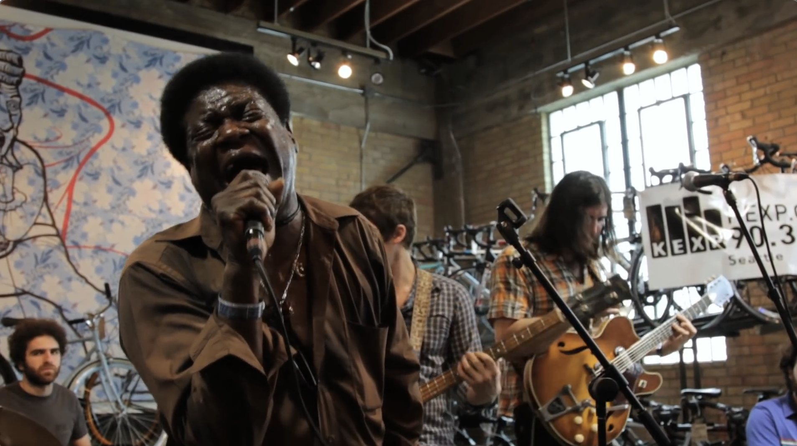

Day 58

Charles Bradley ◆ Why Is It So Hard ◆ 2011
Backed by The Menahan Street Band. Live from Mellow Johnny's Bike Shop in Austin, TX, during KEXP's broadcast at SXSW. Recorded 3/17/2011.
之前找「たそがれ」的时候不是加了个分享盗版音乐的 reddit 组嘛，之后那个组里有人分享 Black Puma 的专辑，reddit 给我推送了。所以我就去油管听听看，然后推荐列表里有这场表演的视频。
演唱虽然没啥技巧，但很有力量和情感，同时又很平稳，感觉还不错。
Why is it so hard
To make it in America
I try so hard
To make it in America
A land of milk and honey
A land supposed to be built with love
It take love and understanding
To live and let live
I was born in Gainesville Florida
I traveled far and wide
Then I moved to Brooklyn, New York
Had hard times, for sometime I hold on
Why is it so hard
To make it in America
I try so hard
To make it in America
Seemed like nothing was goin' right
So I said to myself
You got to move away from here
I went to upstate New York
A little town they call Poughkeepsie
Got me a job
To get away from all this stress
But I couldn't get away
No matter how far I went
Seems like nothing gonna change
Everything still remained the same
Why is it so hard
To make it in America
I try so hard
To make it in America
Why, tell me, tell me
We gotta make a change, in America
Help me somebody
来源：comment by Siiimmmooonnneee